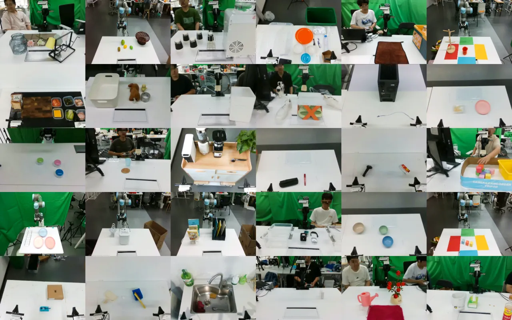
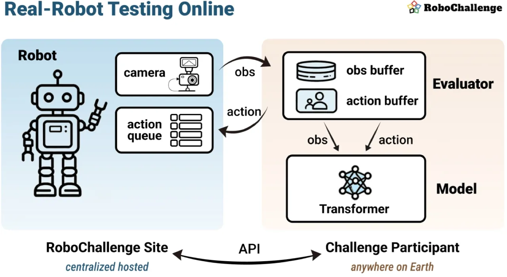
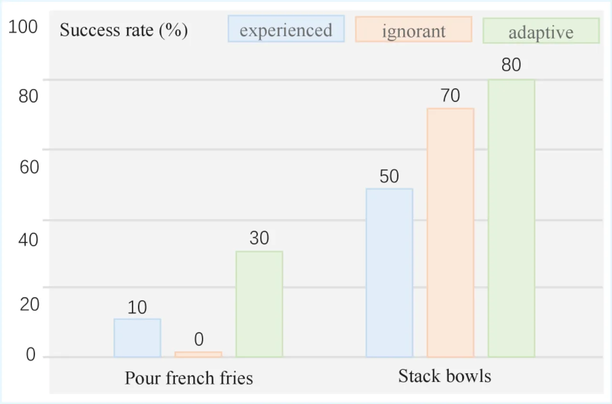
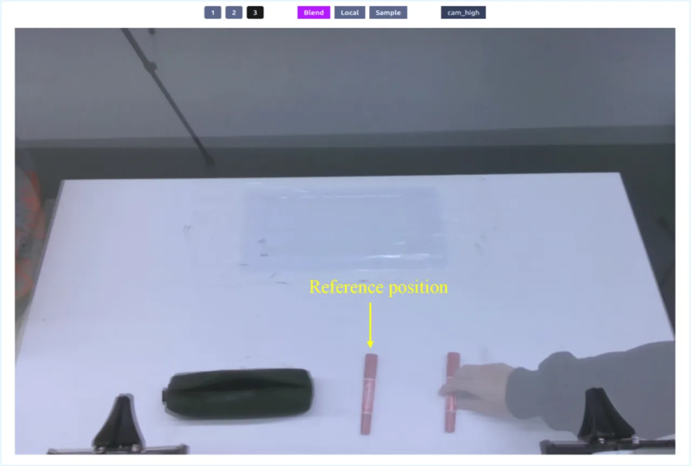
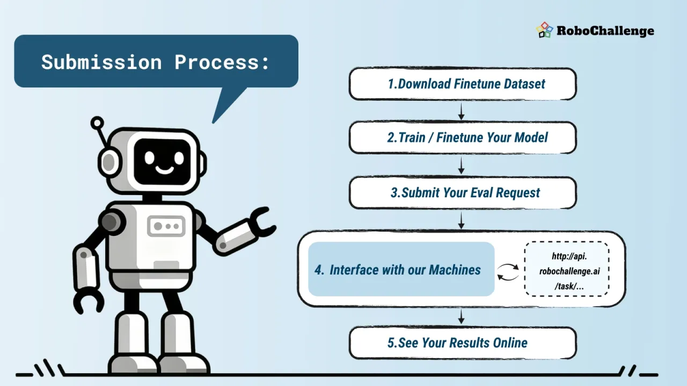
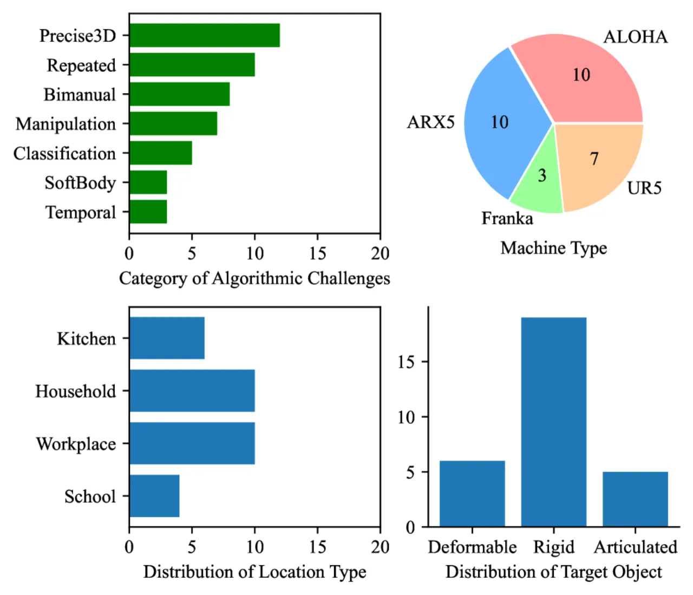
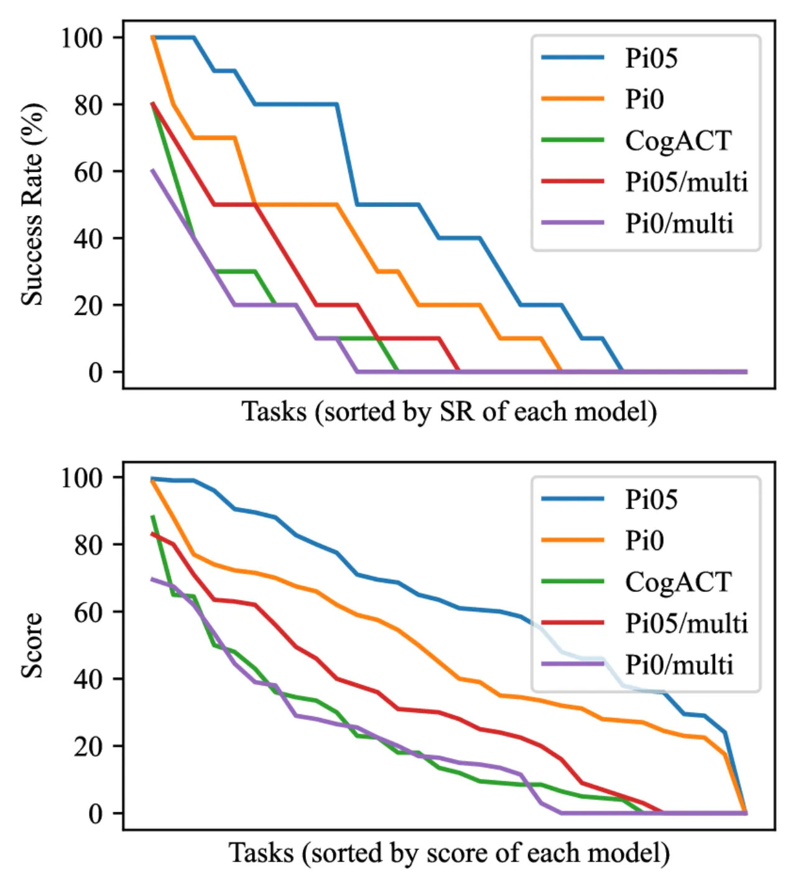
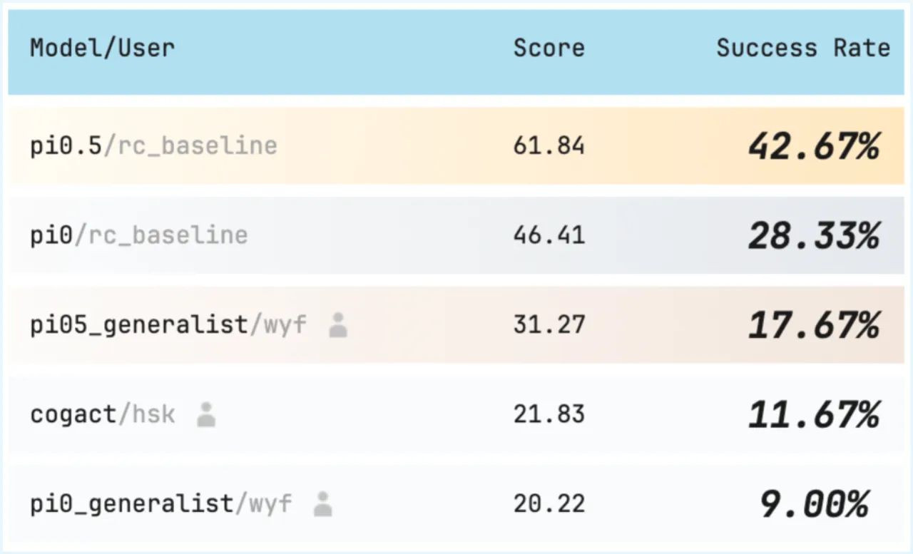

现有 VLA 模型评测大多依赖仿真或有限的真实机器人实验，缺乏标准化、可重现的大规模基准。 RoboChallenge 构建了一套在线真实机器人评测基础设施，配备 10 台跨 4 种平台的机器人， 并推出 Table30 基准（30 项桌面操作任务），系统地测试 π₀、CogACT 等主流 VLA 模型的真实能力。
真实机器人测试是验证机器人控制算法的不可或缺环节，但现有评测体系面临三大挑战： 人工测试者偏差（同一任务因测试者不同，成功率可从 0% 波动至 100%）、 可重现性差（初始场景状态难以精确还原）、 以及规模化成本高（跨机器人平台、跨任务的大规模测试难以实施）。
"Testing on real machines is indispensable for robotic control algorithms."

RoboChallenge 采用"远程机器人（remote robot）"范式：参赛者在本地运行推理，通过低层 API 获取精确时间戳的传感器观测，并将动作指令写入机器人的 FIFO 队列，无需提交 Docker 镜像或模型权重， 彻底规避软件栈兼容性问题，同时通过 Visual Task Reproduction 机制保证场景初始状态的高度一致性。

系统部署 4 种机器人平台，共 10 台：
所有机器人均配备 Intel RealSense RGBD 相机（主视角、腕部、侧视角三路），提供 RGB + 深度 + 本体感知多模态观测。 系统可提供每任务最多 1,000 条示教轨迹（存储于 Hugging Face，JSON 格式）。
为解决测试者偏差问题，系统采用参考图像叠加方案：将任务开始时的参考图像实时叠加在摄像头实时画面上， 要求测试者调整场景直至当前观测与参考图像精确匹配。论文将"Adaptive tester"（模型作者）识别出任务 "sweet spot" 从而显著抬高成功率的现象称为 "Sweet-spot Effect"。 该机制有效将不同测试者间的成功率差异压缩至可接受范围。


每项任务分解为若干阶段，满分 10 分，共 10 次 rollout，总分上限 100 分。 每次重试扣除 0.5 分惩罚。基准设有 benchmark protocol（评估单一模型的稳定性） 和 comparative protocol（多模型公平排名）两种评测模式。

论文在 Table30 上评测了 5 种主流 VLA 实现，覆盖 Task-specific（全量任务数据训练） 与 Generalist（每任务 50 条混合训练）两种训练设置，以 Success Rate (SR) 和 Progress Score 为主要指标。
| 模型 | 训练设置 | Success Rate (%) | Progress Score |
|---|---|---|---|
| π₀.₅ | Task-specific | 43.7 | 62.2 |
| π₀ | Task-specific | 28.3 | 47.6 |
| CogACT (Microsoft) | Task-specific | 11.7 | 21.8 |
| π₀.₅ | Generalist | 17.7 | 31.3 |
| π₀ | Generalist | 9.3 | 20.6 |
论文为 30 项任务打上难度标签，揭示 VLA 当前能力边界（所有模型平均）：
| 难度标签 | 平均 Success Rate (%) | 平均 Progress Score |
|---|---|---|
| temporal dependence（时序依赖） | 5 | 14 |
| soft body（软体操作） | 3 | 8 |
| multiview（多视角） | 5 | 21 |
| bimanual（双臂协作） | 8 | 20 |
| precise 3D localization（精细定位） | 12 | 18 |
| simple pick-and-place（简单抓放） | 4 | 42 |
| 全任务平均 | 22 | 37 |



论文验证了 VLA 对视觉扰动的鲁棒性：在输入图像上施加背景替换、遮挡等增强后， 模型输出动作几乎不变，说明 VLA 已具备一定视觉不变性， 环境光照与相机漂移等非受控因素对评测的影响在可接受范围内。
采用"用户本地推理"范式的核心代价是： "we have no means to check whether the model actually run by the user matches the user's claim." 恶意用户可替换模型或引入人工辅助（human-in-the-loop cheating），系统当前无技术手段防范。
固定的参考图像场景存在被针对性过拟合的风险。论文指出 "There is a chance that the model submissions 'overfit' to the particular reference test cases"， 但实验中目前未观测到此现象。
所有被测 VLA 均为 single-frame 推理，无法处理时序依赖任务 （"identical images may be received on different stages"）， 这直接导致 temporal dependence 类任务平均成功率仅 5%，是最大能力短板之一。
被测模型均工作在 224×224 低分辨率下，对精细三维定位任务（precise 3D localization） 造成显著影响，该类任务平均 SR 仅 12%。
为降低系统复杂度，当前平台省略了力矩传感器。论文承认这对接触丰富（contact-rich）任务 的精细操作能力有所限制，未来版本可能补充。